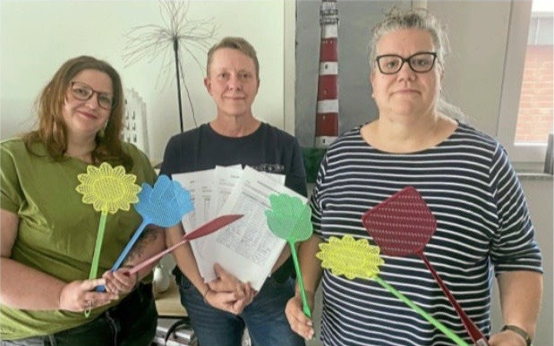

Wer wir sind und warum wir uns gegründet haben

Die Bürgerinitiative Fliegenmelder Ahlener Osten ist ein ehrenamtlicher Zusammenschluss engagierter Bürgerinnen und Bürger. Gemeinsam setzen wir uns dafür ein, die Fliegenbelastung objektiv zu dokumentieren und ihre Auswirkungen auf den Alltag sichtbar zu machen.
Entstanden ist die Initiative aus dem Wunsch heraus, Beobachtungen und Erfahrungen nicht nur einzeln zu schildern, sondern gemeinsam nachvollziehbar zu erfassen und transparent darzustellen.